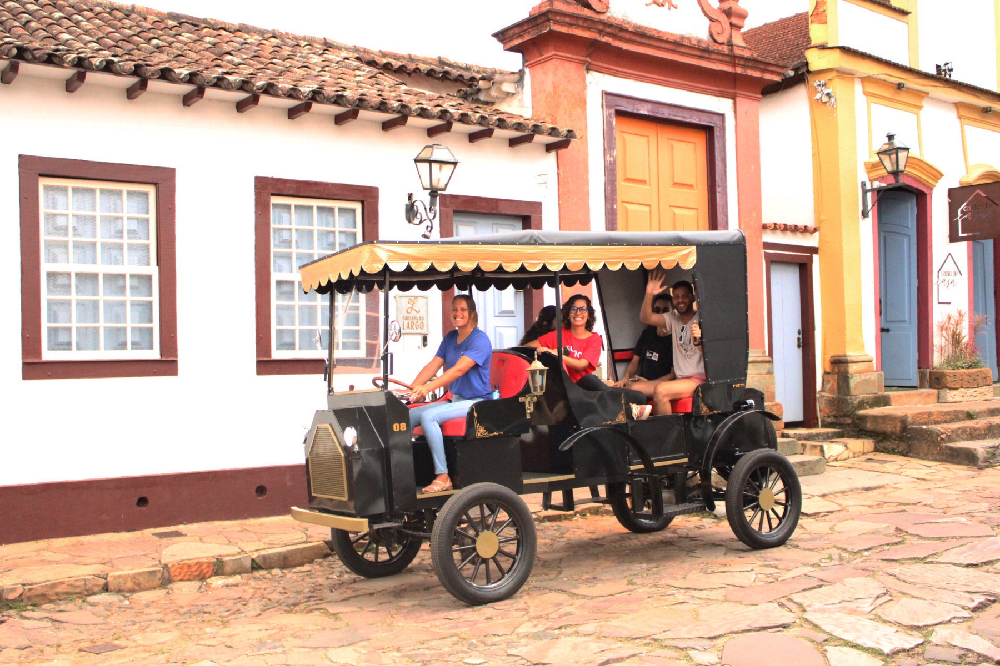
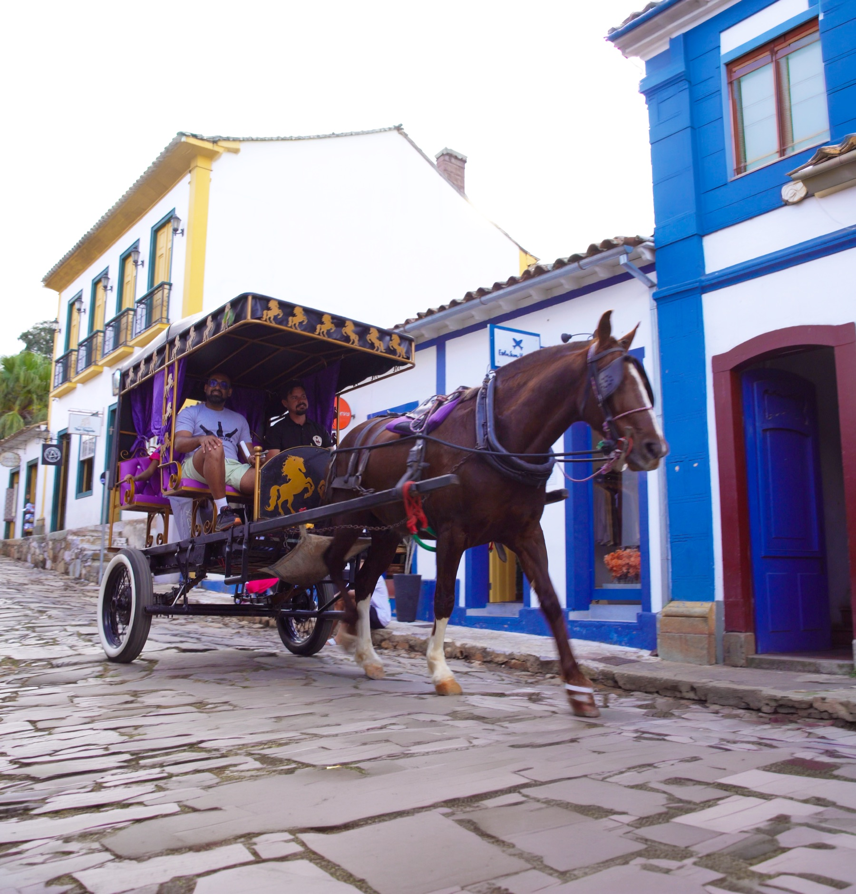
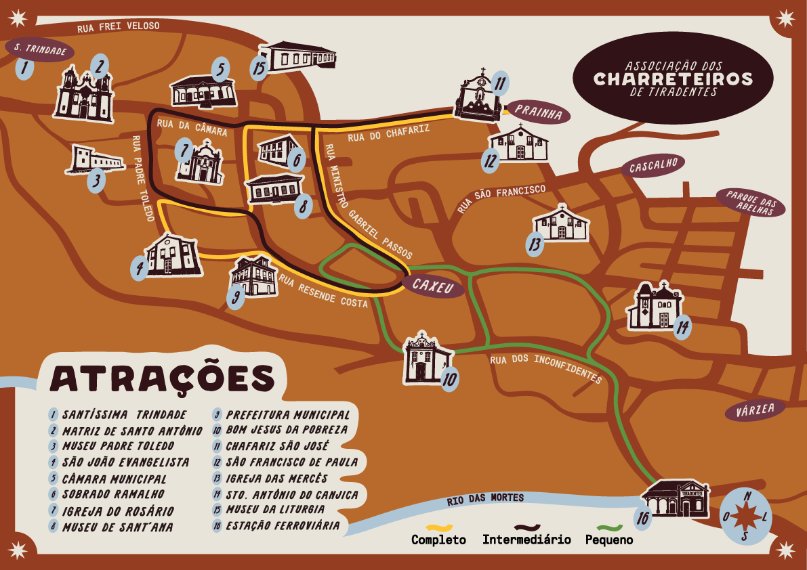

Passeio completo
A experiência plena para quem deseja viver o encanto de Tiradentes.
Tiradentes, Minas Gerais
Um passeio pela história de Tiradentes, conduzido por quem conhece as ruas, as memórias e os encantos da cidade.

Quem somos
Os charreteiros de Tiradentes existem há gerações. Como guardiões da memória local, ajudam a preservar a identidade da cidade, compartilhando histórias que tornam a experiência acolhedora, segura e inesquecível.
Fazer o passeio de charrete é conhecer um dos destinos mais charmosos do Brasil e a riqueza cultural da região - a Matriz de Santo Antônio, o Chafariz, o Museu Padre Toledo, o Mirante de São Francisco e tantos outros.
A origem desse trabalho vem dos tropeiros na Serra de São José, principalmente Dinho de Matos e seu cavalo Criolo. O legado é preservado com orgulho nas histórias compartilhadas por cada charreteiro.
A Associação vive um novo capítulo, com a transição gradual da tração animal para as charretes elétricas. Essa mudança representa um compromisso com o bem-estar animal, a sustentabilidade e a valorização do trabalho dos profissionais, que há décadas fazem parte da cultura e da vida de Tiradentes.

A experiência
Conhecer Tiradentes de charrete é descobrir ruas e paisagens de um dos destinos mais charmosos de Minas. Cada charreteiro compartilha histórias, curiosidades e memórias que tornam a experiência acolhedora, segura e inesquecível.
Institucional
Um pouco da história, da cultura e do trabalho dos Charreteiros de Tiradentes.
Roteiros
Cada visitante tem seu ritmo. Por isso, oferecemos diferentes trajetos para que você descubra Tiradentes da maneira que preferir.

A experiência plena para quem deseja viver o encanto de Tiradentes.
Novos cenários, histórias e uma imersão maior na cultura local.
Conheça pontos históricos da cidade em um trajeto pequeno e encantador.
Onde estamos
Nos encontre no Largo das Forras, na R. Silvio Vasconcelos, 86 - Tiradentes, MG, 36325-000. Estamos sempre por lá, prontos para receber você e apresentar os passeios disponíveis.
Abrir no Google MapsPonto tradicional de encontro dos charreteiros em Tiradentes.
Tiradentes, MG, 36325-000.
Prontos para receber você com carinho.
Conheça as opções disponíveis diretamente com a Associação.